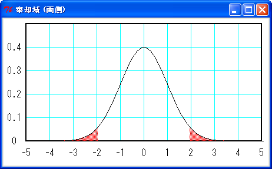
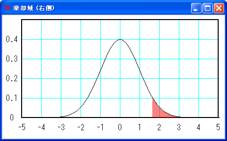
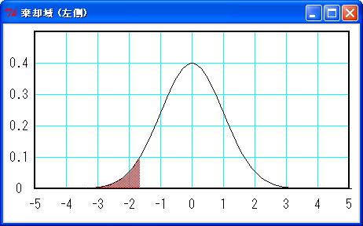
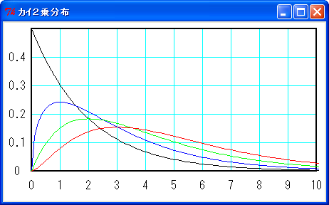

今回は統計学の「検定」について説明します。統計学で言う検定とは、ある仮説にもとづいて実験または調査を行い、その結果からその仮説が正しいか否かを確率的に判定することです。「仮説検定」や「統計学的仮説検定」という場合もあります。文章で説明してもわかりにくいので、簡単な例を示しましょう。
ある工場で直径 30 mm のガラス玉を製造していて、その品質を検査することを考えます。今までの経験上、このガラス玉の直径は平均 30 mm で標準偏差は 0.2 mm であることがわかっています。ある時間帯に作られたガラス玉の中から 30 個無作為抽出したところ、次に示すデータが得られました。なお、これらのデータは標準偏差も含めて仮想的なもので、現実のデータではありません。
リスト : ガラス玉の直径 data = [ 30.04, 30.01, 29.68, 29.84, 30.19, 29.93, 29.98, 29.95, 30.06, 30.27, 30.14, 29.89, 29.93, 29.87, 30.10, 30.10, 30.04, 29.99, 29.79, 29.89, 30.02, 29.98, 29.70, 29.71, 29.88, 30.12, 30.30, 29.70, 29.93, 29.81 ]
この標本平均を求めると 29.96 mm になりました。この時間帯に作られたガラス玉の直径は平均 30 mm を満たしているか検定してみましょう。この場合、仮説は「ガラス球の直径は平均 30 mm である」とします。
標本の大きさ n がある程度大きい場合、標本平均 m は正規分布に近似することができるので、その値は 30 ± 1.96 * √(0.2 * 0.2 / 30) => (29.928, 30.072) の範囲に 95 % の確率で入いります。逆にいえば、m が 29.928 よりも小さくなる、または 30.072 よりも大きくなる確率は 5 % しかありません。
もしも、m < 29.928 または 30.072 > m であるならば、5 % の確率でしか起こらない事象が起きたことになります。この仮説のもとでこの事象が起こるのは不自然なことと考えられるので、前提となる仮説に誤りがあるのではないかと疑います。つまり、ガラス玉の直径は平均 30 mm ではなく、この時間帯に作られたガラス玉は基準を満たしていないと判定するわけです。
統計学では、前提となる仮説を「帰無仮説」と呼び、普通は H0 と記述します。また、帰無仮説に対立する仮説を「対立仮説」と呼び、H1 と記述します。帰無仮説を否定することを「棄却する」といい、帰無仮説を棄却したときに「検定の結果は有意である」といいます。
基準となる小さな確率αを「有意水準」または「危険率」といいます。また、帰無仮説を棄却する範囲を「危険率 100α % の棄却域」といいます。一般に、有意水準αには 0.05 または 0.01 が用いられます。危険率 5 % の棄却域は下図のようになります。
 棄却域 (赤色) の面積は 5 %
上図のように棄却域が左右の両側にある場合を「両側検定」といいます。検定する問題によって、左右どちらか一方に棄却域を設定する場合があります。これを「片側検定」といいます。片側検定の場合、危険率 5 % の棄却域は下図のようになります。
 棄却域 (赤色) の面積は 5 % (1.65 < x)
 棄却域 (赤色) の面積は 5 % (x < -1.65)
今回の例の場合、求めた平均値 29.96 mm は両側の棄却域に入らないので、帰無仮説は棄却されません。この場合、95 % の確率で起こるありふれた事象が起きたので、この時間帯のガラス玉の直径は平均 30 mm とみなしてもよいだろう、と判定します。
ここで、仮説検定はあくまでも確率的に判断を下しているだけであり、絶対的なものではないということに注意してください。一般に、帰無仮説 H0 が正しいのにそれを棄却する誤りを「第 1 種の誤り」といいます。第１種の誤りを犯す確率が危険率になります。また、H0 が誤りなのにこれを容認する誤りを「第 2 種の誤り」といいます。帰無仮説を棄却するにしても容認するにしても、その判定が 100 % 正しいというわけではないのです。
仮説検定の手順をまとめると次のようになります。
仮説検定の場合、棄却することを前提に帰無仮説を立てることが多くあります。たとえば、2 つの母集団の平均値 μ1 と μ2 に差があることを示したい場合、帰無仮説として "μ1 = μ2" を立てます。この場合、対立仮説は "μ1 != μ2" となります。そして、検定を行って帰無仮説を棄却することで、平均値に差があることを示すわけです。
仮説検定は、用いる統計量によって様々な方法があります。特に、カイ 2 乗分布 (χ2 分布) を利用したカイ 2 乗検定は、適合度の検定などによく用いられる方法です。
適合度の検定は、ある観測値 (実現値) が期待値 (理論値) と一致するかどうかを調べる方法です。たとえば、サイコロはどの目も等確率で出ることが期待されます。ここで帰無仮説「サイコロの出る目に偏りはない」を立てます。実際にサイコロを 600 回振って出た目を数えたところ、次のようになりました。
| 目 | 観測度数 | 期待度数 |
|---|---|---|
| 1 | 89 | 100 |
| 2 | 109 | 100 |
| 3 | 91 | 100 |
| 4 | 108 | 100 |
| 5 | 99 | 100 |
| 6 | 104 | 100 |
| 合計 | 600 | 600 |
サイコロが正常であるならば、各目の期待度数は 100 になります。次に、観測度数と期待度数の差を数値化します。単純に差分の合計値を求めると上手くいかないので、次の式で数値化します。
k
χ2 = Σ (xi - mi)2 / mi
i=1
n : 回数, xi : 観測度数, mi : 期待度数, k : 階級数
この式の値 χ2 は 0 以上の値をとり、観測度数と期待度数の差が少ないと小さな値に、差が多くなるほど大きな値になります。そして χ2 の値は、自由度 k - 1 のカイ 2 乗分布に近似できることが知られています。自由度をνとすると、カイ 2 乗分布の密度関数は次式のようになります。
f(x) = xν/2 - 1 * exp(- x/2) / (2ν/2 * Γ(ν/2))
∞
ここで Γ(x) = ∫ exp(-t) * tx-1 dt (ガンマ関数)
0
図に示すと次のようになります。
 自由度 2 - 黒, 3 - 青, 4 - 緑, 5 - 赤
サイコロの度数分布表からχ2値を求めると、次のようになります。
χ2 = (89 - 100)2/100 + (109 - 100)2/100 + (91 - 100)2/100 +
(108 - 100)2/100 + (99 - 100)2/100 + (104 - 100)2/100
= 3.64
次に有意水準αの値を 0.05 に設定します。適合度を検定するので、この場合は棄却域を右側に設定します。参考文献 1, 2 にあるカイ 2 乗分布表から自由度 5 危険率 5 % の棄却域を求めると (11.07, ∞) になります。今回のχ2値は 3.64 なので棄却域には入りません。したがって、帰無仮説「サイコロの出る目に偏りはない」を容認します。もしも、χ2値が 11.07 以上であれば帰無仮説を棄却して、このサイコロは出る目に偏りがあるという結論になります。
この例のように、期待度数が一定の場合を特に「一様性の検定」といいます。なお、期待度数が一定ではない場合でも、カイ 2 乗検定を行うことができます。たとえば、サイコロを 3 回振って出た目の和を求めることにしましょう。とりうる値は 3 から 18 まであり、サイコロの出る目が等確率の場合、その確率分布は次のようになります。
| 値 | 確率 | 値 | 確率 |
|---|---|---|---|
| 3 | 1/216 | 11 | 27/216 |
| 4 | 3/216 | 12 | 25/216 |
| 5 | 6/216 | 13 | 21/216 |
| 6 | 10/216 | 14 | 15/216 |
| 7 | 15/216 | 15 | 10/216 |
| 8 | 21/216 | 16 | 6/216 |
| 9 | 25/216 | 17 | 3/216 |
| 10 | 27/216 | 18 | 1/216 |
実際に 600 回の試行を行った結果、観測度数は次のようになりました。
| 値 | 観測度数 | 期待度数 | 値 | 観測度数 | 期待度数 |
|---|---|---|---|---|---|
| 3 | 4 | 2.78 | 11 | 74 | 75.00 |
| 4 | 7 | 8.33 | 12 | 71 | 69.44 |
| 5 | 12 | 16.67 | 13 | 62 | 58.33 |
| 6 | 32 | 27.78 | 14 | 32 | 41.67 |
| 7 | 41 | 41.67 | 15 | 40 | 27.78 |
| 8 | 55 | 58.33 | 16 | 17 | 16.67 |
| 9 | 71 | 69.44 | 17 | 12 | 8.33 |
| 10 | 68 | 75.00 | 18 | 2 | 2.78 |
| 合計 | 600 | 600 |
この結果が表 B の確率分布と一致するかカイ 2 乗検定を行います。帰無仮説は「表 B の確率分布と一致する」とします。差が大きい場合、χ2 値は大きくなるので棄却域は右側だけの片側検定になります。表 B のχ2 値を計算すると 13.32 になりました。
自由度 16 - 1 = 15 のカイ 2 乗分布で危険率 5 % の棄却率を求めると (25.0, ∞) になります。13.32 < 25.0 なので棄却域には入りません。したがって、帰無仮説は容認されて、表 C の結果は表 B の確率分布に一致するという結論になります。もしも、χ2値が 25.0 よりも大きい場合は帰無仮説を棄却して、表 B の確率分布とは一致しないという結論になります。
カイ 2 乗検定は適合度の検定だけではなく「独立性」の検定にも用いることができます。独立性とは 2 つの確率変数の間に関連性がないことをいいます。カイ 2 乗検定の場合、相関性を示すために独立性の検定を行うことがよくあります。たとえば、確率変数 X と Y に関連性がないという帰無仮説を立てます。次に、カイ 2 乗検定を行って、それが棄却されれば、X と Y に関連性があるという結論になります。
独立性の検定には「分割表」を使います。確率変数 X の値が m 個、確率変数 Y の値が n 個ある場合、分割表は m 行 n 列の大きさになります。i 行 j 列の要素を zij とすると、χ2値は次のように計算されます。
m n
χ2 = Σ Σ (zij - Fij)2/Fij
i=1 j=1
Fij = z*j * zi* / total
m n
z*j = Σ zij, zi* = Σ zij
i=1 j=1
n m
total = Σ Σ zij
i=1 j=1
ポイントは各要素の期待度数 Fij の計算方法です。i 行の合計値を zi* とし、j 列の合計値を z*j とします。全要素の合計値を total とすると、期待度数は j 列の合計値を各行の割合で振り分ける、または i 行の合計値を各列の割合で振り分けることで求めることができます。どちらの場合でも期待度数は "j 列 の合計値 * i 行の合計値 / total" になります。この場合、χ2値は自由度 (n - 1) * (m - 1) のカイ 2 乗分布に従うことが知られています。
たとえば、サイコロを 2 回振った場合、最初に出る目 X と次の目 Y に相関性はないはずです。これをカイ 2 乗検定で確かめてみましょう。帰無仮説は「X と Y に相関性はない」となります。実際に、この試行を 720 回行ったところ結果は次のようになりました。
分割表
Ｙ
| １ ２ ３ ４ ５ ６ | 計
--+------------------------+----
１| 16 21 19 21 20 24 | 121
２| 19 15 17 13 24 24 | 112
Ｘ ３| 21 14 20 22 22 18 | 117
４| 18 20 23 18 16 24 | 119
５| 14 17 20 19 24 22 | 116
６| 21 21 24 26 23 20 | 135
---------------------------+----
計|109 108 123 119 129 132 | 720
たとえば、z11 の期待度数は 121 * 109 / 720 = 18.32 になります。分割表が大きくなると手で計算するのは大変なのでプログラムを作りましょう。次のリストを見てください。
リスト : 分割表のカイ 2 乗値を求める
def chi2(count):
total = 0.0
xn = len(count)
yn = len(count[0])
xcount = [0] * xn
ycount = [0] * yn
for x in xrange(xn):
for y in xrange(yn):
a = count[x][y]
total += a
xcount[x] += a
ycount[y] += a
#
v = 0.0
for x in xrange(xn):
for y in xrange(yn):
F = xcount[x] * ycount[y] / total
a = count[x][y] - F
v += a * a / F
return v
関数 chi2 の引数 count が分割表で 2 次元配列を渡します。行の個数を xn に、列の個数を yn にセットします。そして、行の合計値を xcount に、列の合計値を ycount に、要素の合計値を total に集計します。あとは、χ2値を計算するだけです。
実際に計算すると、χ2値は 12.396 になりました。自由度 5 * 5 = 25 のカイ 2 乗分布で危険率 5 % の棄却域は (37.7, ∞) になります。今回は棄却域に入っていないので帰無仮説を容認する、つまり X と Y に相関性はないという結論になります。もしも、χ2値が 37.7 よりも大きい場合は帰無仮説を棄却して、X と Y に相関性があるという結論になります。
もう一つ、簡単な例を示しましょう。カイ 2 乗検定では 2 行 2 列の分割表もよく用いられます。たとえば、ある飲料 A の好き嫌いを男性 80 人と女性 120 人に調査したところ、次のような結果になりました。
分割表
| 好き 嫌い | 計
----+-----------+-----
男性| 35 45 | 80
女性| 80 40 | 120
----+-----------+-----
計 | 115 85 | 200
男女で好みに差があるか検定してみましょう。この場合、帰無仮説は「男女で好みに差は無い」となります。実際に計算すると、χ2値は 10.315 になりました。自由度 (2 - 1) * (2 - 1) = 1 のカイ 2 乗分布で危険率 5 % の棄却域は (3.84, ∞) になります。この場合、χ2値は棄却域に入っているので帰無仮説を棄却して、飲料 A は男女で好みに差があるという結論になります。もしも、男性の好き嫌いが 45, 35 だったとすると、χ2値は 2.222 となり、帰無仮説を容認することになります。
カイ 2 乗検定を行う場合、観測度数が少ないとカイ 2 乗分布の近似度が悪くなるので注意が必要です。2 行 2 列の分割表で観測度数が 10 以下のもの (5 以下とする説もある) がある場合、「イェツ (Yates) の修正」という方法を使います。このページでは説明を割愛いたしますので、詳しくは 参考文献 1 をお読みください。
母集団が正規分布 N(μ, σ2) に従うことが分かっている場合、母平均μを検定することは簡単です。標本の大きさが n の場合、標本平均 m は正規分布 N(μ, σ2/n) に近似されます。したがって、次に示す統計量 Z は標準正規分布 N(0, 1) に従うので、簡単に検定することができます。
Z = (m - μ) / √(σ2/n) ～ N(0, 1) 危険率 5 % の棄却域 両側検定 : (-∞, -1.96), (1.96, ∞) 左側検定 : (-∞, -1.65) 右側検定 : (1.65, ∞)
簡単な例を示しましょう。ある工場で生産している電球の寿命は正規分布に従っていて、平均寿命は 1800 時間で標準偏差が 180 時間であることが分かっています。ここで、30 個の電球を無作為抽出して寿命を計測したところ次のデータを得ました。なお、これらのデータは、平均寿命と標準偏差も含めて仮想的なもので、現実のデータでありません。
リスト : 電球の寿命
data = [
1834, 1804, 1509, 1652, 1971, 1739, 1785, 1754,
1855, 2041, 1927, 1696, 1734, 1679, 1890, 1889,
1834, 1790, 1611, 1699, 1815, 1780, 1526, 1537,
1692, 1910, 2073, 1529, 1732, 1630,
]
この電球の平均寿命は 1800 時間であることを認めてよいか、消費者の立場で検定してみましょう。帰無仮説は「電球の平均寿命は 1800 時間である」になります。この場合、平均寿命は 1800 時間よりも長くてかまわないので、1800 時間よりも短いかどうかが問題になります。したがって、対立仮説は「電球の平均寿命は 1800 時間よりも短い」となり、棄却域は片側 (左側) に設定します。data の平均値を求めると 1763.9 時間になるので、統計量 Z を計算すると次のようになります。
Z = (1763.9 - 1800) / (180 / sqrt(30)) = -1.098
危険率 5 % の棄却率は (-∞, -1.65) なので、Z は棄却域に入りません。したがって、帰無仮説は棄却されず「電球の平均寿命は 1800 時間である」ことを容認します。
もしも、計測結果が次に示すデータだったとしましょう。
リスト : 電球の寿命
data1 = [
1784, 1754, 1459, 1602, 1921, 1689, 1735, 1704,
1805, 1991, 1877, 1646, 1684, 1629, 1840, 1839,
1784, 1740, 1561, 1649, 1765, 1730, 1476, 1487,
1642, 1860, 2023, 1479, 1682, 1580,
]
data1 の場合、平均寿命は 1713.9 時間になります。統計量 Z を計算すると -2.620 になり、危険率 5 % の棄却域に入ります。よって、帰無仮説を棄却して「電球の平均寿命は 1800 時間よりも短い」となります。
母集団が正規分布していない場合でも、n を大きくすると中心極限定理により標本平均 m は正規分布で近似することができます。たとえば、実数の区間 [0, 1.0) の一様乱数は、平均 1/2 分散 1/12 になります。n 個の乱数の平均値は 1/2 で分散 1/12n になるので、統計量 Z = (m - 1/2)/√(1/12n) は N(0, 1) に従います。これを使って乱数の簡単な検定を行うことができます。 次のリストを見てください。
リスト : 擬似乱数の簡単な検定
import math, rand
def test(prg, n):
m = 0.0
for _ in xrange(n):
m += prg.random()
m /= n
z = (m - 0.5) / math.sqrt(1.0 / (12 * n))
return -1.96 <: z < 1.96
prg = rand.Random(1)
for _ in xrange(20):
print test(prg, 10000)
モジュール rand は拙作のページ 擬似乱数 で作成したもので、線形合同法で乱数を生成します。プログラムは簡単なので説明は不要だと思います。今回は危険率 5 % で判定しているので、テストを 20 回行えば 1 回くらいは棄却されることになります。テスト回数をもっと増やすと、棄却される割合は 5 % に近い値になります。そうでなければ、擬似乱数として何か問題があると考えられます。テスト結果は、True が 19 回で False が 1 回になりました。
このテストは簡単なので、ほとんどの乱数生成アルゴリズムはこれをクリアすると思います。擬似乱数の検定はけっこう難しくて、この検定をクリアしたからといって一様性が保障されるわけではありません。複数の検定を試してみる必要があります。擬似乱数の検定にはいろいろな方法が考案されていて、一様性の検定にはカイ 2 乗検定を用いることができます。興味のある方は 参考文献 2 をお読みください。
母集団が正規分布に従っていて分散が未知の場合は、標本の不偏分散 U2 で代用して t 分布を使って検定します。t 分布を用いた検定を「t 検定」といいます。次に示す統計量 T は自由度 n - 1 の t 分布 t(n - 1) に従います。
T = (m - μ) /√(U2/n) ～ t(n - 1)
たとえば、最初に例題として取り上げたガラス玉で、直径は正規分布に従っているが分散は未知だったとしましょう。この場合、平均は 29.96 mm で不偏分散が 0.0263 になり、統計量 T の値を計算すると -1.351 になります。自由度 29 の t 分布で危険率 5 % の棄却域は両側検定で (-∞, -2.05), (2.05, ∞) になります。T は棄却域に入っていないので、帰無仮説は棄却されません。
電球の寿命の場合、data では平均寿命 1763.9 時間で不偏分散は 21528.92 になります。統計量 T の値を計算すると -1.348 になり、自由度 29 の t 分布で危険率 5 % 左側の棄却域 (-∞, -1.70) に入りません。したがって、帰無仮説は棄却されずに容認されます。
data1 の場合は、平均寿命 1713.9 時間で不偏分散は 21528.92 になります。統計量 T の値は -3.214 になり、危険率 5 % の棄却域 (-∞, -1.70) に入ります。この場合は帰無仮説を棄却して「電球の平均寿命は 1800 時間よりも短い」となります。
2 つの母集団 A, B があり、それぞれ正規分布 N(μa, σa2), N(μb, σb2) に従うとします。このとき、μa - μb を検定することを考えます。帰無仮説は平均値に差がないこと、つまり μa = μb になります。帰無仮説が棄却されると、2 つの母集団の平均値に差があることになります。
分散が既知の場合、正規分布の加法性から 2 つの標本平均の差 ma - mb が次の正規分布に従うことを用いて検定します。
ma - mb は N(μa-μb, σa2/n + σb2/n) に従う Z = ((ma - mb) - (μa - μb)) / √(σa2/n + σb2/n) ここで μa = μb とすると Z = (ma - mb) / √(σa2/n + σb2/n) ～ N(0, 1)
簡単な例を示しましょう。ある地域 A, B で同じ学年の生徒を無作為抽出して身長を計測したところ、次のデータを得ました。なお、これらのデータは仮想的なもので、現実のデータではありません。
リスト : 身長のデータ
data_a = [
151.0, 154.6, 160.5, 147.1, 151.2, 144.4, 157.2, 157.8,
150.8, 153.1, 146.2, 155.9, 156.6, 151.3, 144.9, 156.7,
145.7, 149.0, 141.7, 148.2, 148.0, 149.8, 144.3, 159.0,
151.3, 134.7, 157.7, 157.1, 135.7, 156.9
]
data_b = [
160.5, 150.5, 158.6, 149.2, 150.0, 154.4, 147.9, 143.4,
155.9, 138.2, 162.3, 155.4, 158.6, 152.2, 154.4, 149.7,
145.4, 146.4, 156.6, 153.1, 162.8, 151.4, 146.7, 156.8,
143.9, 157.0, 139.3, 147.2, 149.8, 154.7
]
地域 A の平均身長は 150.61 cm で地域 B の平均身長は 151.74 cm になりました。今までの経験上、分散は両地域とも 36.0 であることが分かっています。2 つの地域で平均身長に差があるか検定してみましょう。帰無仮説は「平均身長に差は無い」となります。統計量 Z を計算すると次のようになります。
Z = (150.61 - 151.74) / sqrt(36.0/30 + 36.0/30) = -0.729
危険率 5 % の棄却域は両側検定で (-∞, -1.96), (1.96, ∞) になります。Z は棄却域に入らないので帰無仮説を容認します。つまり、2 つの地域の平均身長に差はないという結論になります。
もしも、地域 B の標本が次に示すデータだとしましょう。
リスト : 地域 B の身長データ
data_b1 = [
163.5, 153.5, 161.6, 161.4, 159.8, 152.2, 153.0, 157.4,
150.9, 146.4, 158.9, 144.3, 141.2, 165.3, 158.4, 161.6,
161.5, 159.1, 155.2, 146.3, 157.4, 153.4, 152.7, 148.4,
149.4, 159.6, 156.1, 156.3, 148.4, 165.8, 154.4, 148.5,
149.7, 159.8, 146.9, 160.0, 142.3, 150.2, 152.8, 157.7
]
標本の大きさが 40 で平均身長は 154.53 cm になります。地域 A と平均身長に差があるか検定すると、次のようになります。
Z = (150.61 - 154.53) / sqrt(36.0/30 + 36.0/40) = -2.705
この場合、統計量 Z の値は棄却域に入るので帰無仮説を棄却して、平均身長に差があるという結論になります。
分散は分からないが同じ値とみなせる場合、標本の不偏分散で代用して t 分布で検定します。標本の大きさを na nb 標本平均を ma mb 不偏分散を Ua Ub とすると、次の式で分散σと統計量 T を計算します。
σ = ((na - 1)Ua + (nb - 1)Ub) / (na + nb - 2) T = (ma - mb) / √(σ/na + σ/nb) ～ t(na+nb-2)
統計量 T は自由度 na + nb - 2 の t 分布に従います。簡単な例として、平均身長の例題で分散の値が未知の場合を考えてみましょう。data_a の平均値は 150.61 cm 不偏分散 43.46 で、data_b の平均値は 151.74 cm 不偏分散 39.82 になります。統計量 T を計算すると次のようになります。
σ = ((30 - 1) * 43.46 + (30 - 1) * 39.82) / (30 + 30 - 2) = 41.64 T = (150.61 - 151.74) / sqrt(41.64 / 30 + 41.64 / 30) = -0.678
参考文献 1 の t 分布表に自由度 58 の値は掲載されていないので、自由度 60 で代用します。危険度 5 % の棄却域は両側検定で (-∞, -2.00), (2.00, ∞) になるので、T は棄却域に入りません。よって、帰無仮説を容認して「平均値に差は無い」が結論になります。
data_b1 の場合、平均 154.53 cm 不偏分散 39.78 になります。統計量 T を計算すると次のようになります。
σ = ((30 - 1)*43.46 + (40 - 1)*39.78) / (30 + 40 - 2) = 41.35 T = (150.61 - 154.53) / sqrt(43.46/30 + 41.35/40) = -2.488
自由度 60 で代用すると、T の値は棄却域 (-∞, -2.00) に入るので、帰無仮説を棄却して「平均値に差がある」が結論になります。
今までは 2 つの母集団の平均値を比較しましたが、1 つの母集団の中で 2 つのデータに差があるか比較したい場合があります。たとえば、無作為抽出した 30 人に飲料 A と飲料 B を飲み比べてもらい、点数をつけてもらいました。その結果、次のようなデータを得ました。
| A | B | d | A | B | d |
|---|---|---|---|---|---|
| 6 | 6 | 0 | 8 | 8 | 0 |
| 6 | 6 | 0 | 8 | 8 | 0 |
| 4 | 2 | 2 | 6 | 5 | 1 |
| 8 | 9 | -1 | 5 | 4 | 1 |
| 6 | 7 | -1 | 6 | 7 | -1 |
| 6 | 6 | 0 | 6 | 7 | -1 |
| 9 | 8 | 1 | 6 | 7 | -1 |
| 6 | 7 | -1 | 6 | 6 | 0 |
| 6 | 6 | 0 | 4 | 4 | 0 |
| 3 | 4 | -1 | 7 | 7 | 0 |
| 3 | 5 | -2 | 8 | 8 | 0 |
| 6 | 7 | -1 | 6 | 6 | 0 |
| 6 | 6 | 0 | 3 | 4 | -1 |
| 8 | 8 | 0 | 7 | 7 | 0 |
| 6 | 6 | 0 | 8 | 6 | 2 |
A の平均値は 6.10 で B の平均値は 6.23 になりました。ここで、A と B の平均値に差があるか検定することを考えます。この場合、A と B の差分 d を求め、その平均値と不偏分散から統計量 T を計算します。T は自由度 n - 1 の t 分布に従うので、これを用いて検定することができます。この方法を「対応のある t 検定」といいます。帰無仮説は「A と B の平均値に差はない」となります。統計量 T の計算式を示します。
T = m / √(U2 / n) ～ t(n-1)
不偏分散の代わりに標本分散 S2 を使うこともできます。その場合は次の式になります。
T = m / √(S2 / (n-1)) ～ t(n-1)
標本分散 S2 を n - 1 で割ることに注意してください。
実際に計算すると、d の平均値は -0.13 不偏分散 0.81 になるので、統計量 T の値は次のようになります。
T = -0.13 / sqrt(0.81/30) = -0.791
T の値は自由度 29 の t 分布で危険率 5 % の棄却域 (-∞, -2.05), (2.05, ∞) に入りません。したがって、帰無仮説を容認します。
もしも、A と B の点数が次に示すデータだったとしましょう。
| A | B | d | A | B | d |
|---|---|---|---|---|---|
| 6 | 6 | 0 | 8 | 8 | 0 |
| 6 | 6 | 0 | 8 | 8 | 0 |
| 4 | 2 | 2 | 6 | 5 | 1 |
| 8 | 7 | 1 | 5 | 4 | 1 |
| 6 | 5 | 1 | 6 | 7 | -1 |
| 6 | 6 | 0 | 6 | 5 | 1 |
| 9 | 8 | 1 | 6 | 5 | 1 |
| 6 | 5 | 1 | 6 | 6 | 0 |
| 6 | 6 | 0 | 4 | 4 | 0 |
| 3 | 2 | 1 | 7 | 7 | 0 |
| 3 | 5 | -2 | 8 | 8 | 0 |
| 6 | 5 | 1 | 6 | 6 | 0 |
| 6 | 6 | 0 | 3 | 2 | 1 |
| 8 | 8 | 0 | 7 | 7 | 0 |
| 6 | 6 | 0 | 8 | 6 | 2 |
A の平均値は 6.10 で B の平均値は 5.70 になりました。d の平均値は 0.4 不偏分散 0.662 で、T の値は次のようになります。
T = 0.4 / sqrt(0.662 / 30) = 2.693
T の値は自由度 29 の t 分布で危険率 5 % の棄却域 (-∞, -2.05), (2.05, ∞) に入っているので、帰無仮説を棄却して「A と B の平均値には差がある」と結論します。
次は母比率の検定について説明します。前回の「母比率の推定」で説明しましたが、母比率 p の母集団から大きさ n の標本を取り出して X = X1 + X2 + ... + Xn を求める場合、X は二項分布 B(n, p) に従います。ここで、n が十分に大きい場合、「ラプラスの定理」により X は正規分布 N(np, np(1 - p)) で近似することができます。したがって、X の平均値は正規分布の加法性により N(p, p(1 - p)/n) で近似することができ、次に示す統計量 Z は標準正規分布 N(0, 1) に従います。
Z = (X - p) / √(p * (1 - p) / n) ～ N(0, 1)
簡単な例を示しましょう。サイコロを 600 回振ったところ、1 の目が 103 回出ました。1 の目が出る母比率が 1 / 6 か検定します。帰無仮説は「母比率は 1/6 である」になります。この場合、母集団の個数は無限大で、標本の大きさは 600 と考えることができます。標本比率 X = 103/600 = 0.172 になるので、統計量 Z は次のようになります。
Z = (0.172 - 0.167) / sqrt(0.167 * (1 - 0.167) / 600) = 0.351
Z の値は危険率 5 % の棄却域 (-∞, -1.96), (1.96, ∞) に入らないので帰無仮説を容認します。
2 つの母集団 A, B があり、属性 C を持つものの母比率を pa pb とします。この母集団から大きさ na nb の標本を無作為抽出したところ、属性 C の個数が ka kb だったとします。ここで、母比率 pa と pb に差があるか検定することを考えます。帰無仮説は pa = pb になります。
pa = pb = p とおくと na と nb が十分に大きい場合、ka と kb の分布は正規分布 N(nap. nap(1 - p)), N(nbp, nbp(1 - p)) によって近似されます。したがって、Xa = ka / na と Xb = kb / nb の差分は正規分布で近似でき、次に示す統計量 Z は標準正規分布 N(0, 1) に従います。
Xa = ka / na ～ N(p, p(1 - p)/na) Xb = kb / nb ～ N(p, p(1 - p)/nb) Xa - Xb ～ N(0, (1/na + 1/nb)p(1 - p)) Z = (Xa - Xb) / √((1/na + 1/nb)p(1 - p)) ～ N(0, 1) ここで p = (ka + kb) / (na + nb)
共通の母比率 p は未知なので、観測した比率 (ka + kb) / (na + nb) で代用します。
簡単な例を示しましょう。ある飲料 A の好き嫌いを男性 80 人と女性 120 人に調査したところ、好きと答えた人はそれぞれ 35 人と 80 人になりました。男女で好みに差があるか検定してみましょう。帰無仮説は「男女で好みに差が無い」となります。統計量 Z を計算すると次のようになりました。
p = 115/200 = 0.575 Xa = 35/80 = 0.4375 Xb = 80/120 = 0.6667 Z = (0.4375 - 0.6667) / sqrt((1/80 + 1/120)*0.575*(1-0.575)) = -3.212
Z の値は危険率 5 % の棄却域 (-∞, -1.96), (1.96, ∞) に入っているので、帰無仮説を棄却して「男女で好みに差がある」となります。
もし、男性で「好き」と答えた人が 45 人だったとすると、結果は次のようになります。
p = 125/200 = 0.625 Xa = 45/80 = 0.5625 Xb = 80/120 = 0.6667 Z = (0.5625 - 0.6667) / sqrt((1/80 + 1/120)*0.625*(1-0.625)) = -1.491
Z の値は危険率 5 % の棄却域に入っていないので、帰無仮説を容認して「男女で好みに差はない」となります。
上記の参考文献は 統計科学のための電子図書システム で公開されています。優れた著作を公開されている脇本和昌様および関係各位に感謝いたします。